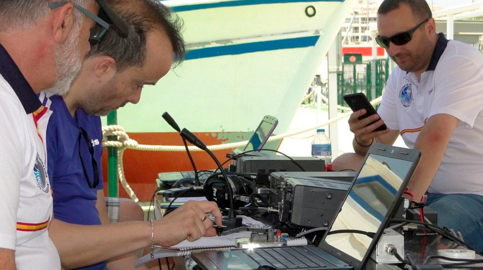

La FCC emitió una notificación de responsabilidad aparente por decomiso esta semana a Frawley, a quien identifica como poseedor de la licencia del servicio de radioaficionados clase extra, WA7CQ, y es propietario/operador de Leader Communications LLC, titular de ocho licencias de microondas y una licencia comercial.
La FCC alegó que el 17 de julio de 2021, usando su equipo portátil de radioaficionado, Frawley transmitió cinco veces, y al día siguiente otras tres en frecuencias asignadas y autorizadas para uso del gobierno, aparentemente provocando interferencia intencional.
Las frecuencias que Frawley interfirió se estaban utilizando para coordinar los equipos de extinción de incendios del Servicio Forestal de EE. UU. y el Departamento de Tierras de Idaho, incluidas las comunicaciones entre los aviones hidrantes que combatían el incendio en Johnson Creek que consumió 400 hectáreas de forestación.
Frawley admitió haber transmitido en frecuencias gubernamentales y se identificó como técnico en comunicaciones. Argumentó que no estaba tratando de causar interferencias, sino que transmitió para proporcionar información a los bomberos.
Sin embargo, la investigación de la FCC concluyó que las transmisiones admitidas por Frawley en frecuencias para las que no estaba autorizado tenían el potencial de causar daños sustanciales a la vida y la propiedad.
La FCC sostuvo que Frawley, por su propia admisión, aparentemente violó en forma deliberada y repetida las reglas de la Comisión cuando realizó ocho transmisiones de radio en una frecuencia para la cual no tenía licencia.
La FCC declaró que las transmisiones no autorizadas en frecuencias para entidades de seguridad pública que son usadas para responder a emergencias también constituyen una violación de la Sección 333 de la Ley de Comunicaciones de 1934, enmendada.
-
